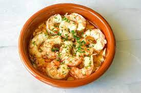

Lasagna

Ingredients
- 4 cloves garlic
- 1 pound frozen large shrimp (21-25 count) - thawed, peeled, and deveined
- kosher salt to taste
- 1 teaspoon hot smoked paprika (Optional)
- ¼ cup extra-virgin olive oil
- 2 tablespoons dry sherry
- 1 tablespoon chopped Italian flat-leaf parsley
Steps
- Slice garlic thinly. Season shrimp with kosher salt and paprika. Mix to coat.
-
Heat garlic and oil in a skillet over medium heat. Cook until garlic starts to turn golden, about 2 minutes.
-
Add shrimp and increase heat to high. Toss and turn shrimp with tongs until starting to curl but still undercooked, about 2 minutes.
-
Pour in sherry. Cook, stirring continuously, until sauce comes up to a boil and shrimp is cooked through, about 1 minute more.
- Remove from heat. Stir in parsley with a spoon.